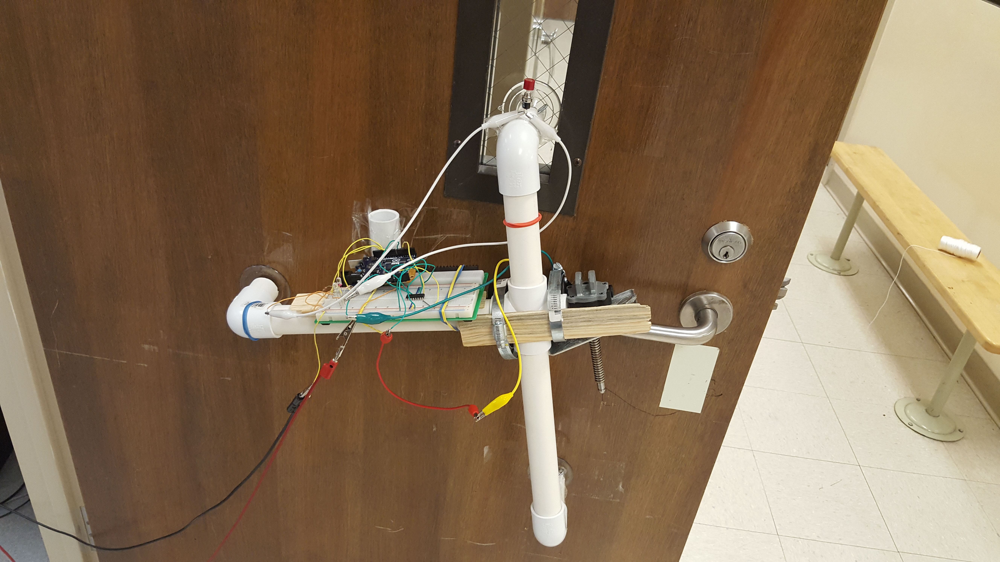

The goal of this project was to design and fabricate a device that could unlock a door after receiving a specific secret knock sequence. To establish portability, a mountable design was selected and an Arduino was used to control the entire system. In the best case scenario, the motor used to handle the door lever would be light as well, requiring minimal power and thus providing maximum portability; unfortunately, the motor chosen was too large and powerful, requiring an external power supply and damaging the design's portability.
An Arduino 101 was utilized with an on-board accelerometer to detect door knocks, especially with the help of a library (CurieIMU) provided by the board. To ensure accurate knock detections, the proper debouncing had to be calibrated by testing different debouncing times (minimum time interval between consecutive knocks to reduce effects of extra vibrations, etc.); to ensure accurate knock comparisons with the saved secret knock sequence, times between knocks were read and mapped to a set range for easy comparison (see code for more detail). An H-bridge chip was connected to the system to allow both clockwise and counterclockwise rotation of the motor so that the door handle could be both opened and closed. Other small components, such as LEDs for success and failure notification and a button to indicate saving a new knock sequence, were added to the design as well, all of which were implemented on a breadboard; in the future, it can be beneficial to solder all of the components onto a perfboard for compactness and ease of mounting on the physical frame used.
At the conclusion of the final project, multiple designs were cycled and a version of the above implementation, with a PVC pipe based door frame, was utilized successfully.